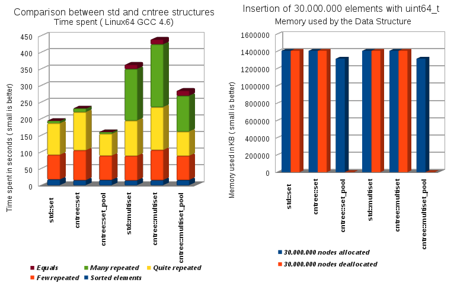
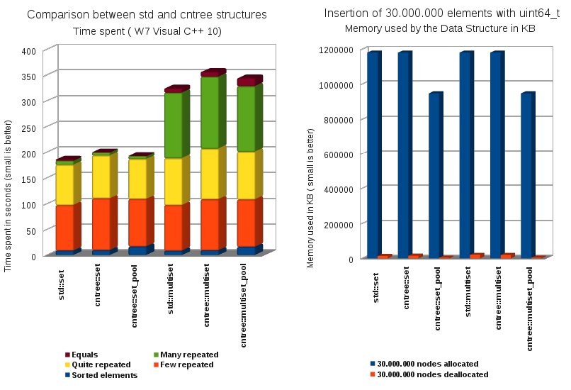
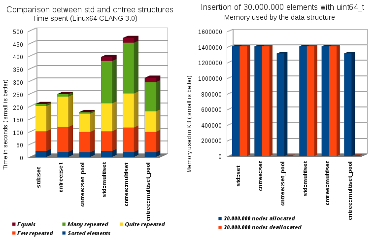

The [
Counter Tree + Suballocator ] Library
Francisco Jose Tapia Copyright © 2010-2013
Francisco Jose Tapia
3.7.- Benchmarks
(GCC 4.7, VC++ 10, CLANG 3.0)
The next graphs show you the time comparing the
std::set, countertree::set,
and countertree_set_pool, and the
std::multiset,
countertree::multiset and countertree::multiset_pool Take consideration that the countertree structures
are more complex than the STL structures due to they must manage not only the pointers, they must manage too the
counters of the nodes, which permit the access by position.
This Benchmark is the insertion of several collections of 30.000.000 numbers of 64 bits in the Data Structure
selected from from a menu
The left graph is the time consumed, and the right is the memory used by the allocator when the 30.000.000
elements are allocated , and after when are freed, and the std::set is empty. This shows the memory
consumption, and the capability of the allocators for to return memory to the operating system and decrease
the memory used by the program
3.7.1.- Benchmarks GCC 4.7

3.7.2.- Benchmarks VC++
12CTP

3.7.3.- Benchmarks CLANG
3.3

The benchmark had been done with 64 bits integers, inserting several collections of 30.000.000 elements.
The test had been done with GCC 4.7 (64 bits) and run on a QuadCore 2.4 GHz ( 8 GB of Dual Channel 1066 MHz
Memory) with the C++0x options activated, and with the highest level of optimization.
FUTURE IMPROVEMENTS :
- The next version, I will have a deep redesign of the counter_tree and the algorithms related in order to
improve the speed.
- Add support for the rvalues for to improve the speed of copy and movement operations
- Add thread safe options with atomic variables of the new C++11. In a near future we will see many core
processors, and this data structure permit the collaborative work of all the cores in the same operation, as
search sequentially in a map for a non indexed part of the information. You can assign a range of nodes to
each core, and all work together resolving the same problem.


 Boost C++
Libraries
Boost C++
Libraries